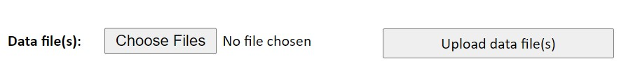

1. Create a free account in hypothes.is
2. Come back to this book and click on the upper-right-hand corner of the page to log in.
3. To make an annotation, select some text and then click on the pop-up menu.
4. To see the annotations of others, click the in the upper right hand corner of the page
Thanks.
Chapter 12 Upload Group Data to the Data Management System
The Data Management (DM) system is managed directly within your Internet Browser. Since it is available to anyone in the World Bank, you need to request to the TTLs of the PovcalNet team the correct url. For now, it is worth mentioning that there are four different servers in the PovcalNet system.
Development (internal) server
The Development (or Internal) server is mainly for quality assurance (QA) work. The whole PovcalNet update is done in this server. Everything that is explained in this chapter is supposed to be done in this server. Once it is done, ITS will make a perfect copy into production.
Production
The production server is the final step in the deployment process. In reality, the production server is two servers that run in the back-en of the PovcalNet website, balancing out the load of users requests at all time. This server is not managed by any member of the PovcalNet team, but only by ITS. When the update is complete in the Development server, ITS makes a perfect copy from development to production, deploying thus a new version of the whole PovcalNet system.
Testing server
This server is mainly used for experimentation. The kind of work done in this server may highly affect the overall structure of the PovcalNet system, and therefore it cannot be done in either development of production. For instance, in 2020 the PovcalNet team and the Poverty GP wanted to assess the possibility of removing the consumption data of Mexico, leaving only the income data into de system. To avoid problems on development or production, this assessment was done in the testing server, where the data could be removed safely and a special version of the master file could be uploaded.
Restricted (AR) server
This server is used when restricted data are intended to be part of the PovcalNet system. In theory, anyone in the WB may access the data in the testing, development, or production servers. The restricted server just adds an extra layer of authentication in which only selected people can access the data. It is seldom used.
12.1 Master Data
When the master file is updated locally, the most recent version will be always
available in the folder p:\01.PovcalNet\00.Master\02.vintage\. There you can
find all the different versions of the master file since September, 27th, 2018.
The suffix number of each file indicates the date and time in which the file was
created. It has the form YYYYMMDDhhmmss, for year, month, day, hour, minute,
and second. Always make sure you upload the most recent version.
To select the Master file in the DM system, click “Choose file” next to the label Metadata file, and then click on “Upload metadata”, otherwise it won’t be uploaded. Finally, you can click on “Check Survey means” to see the if the DM system loaded correctly the Master file.

12.2 PCB files
Once you have created the pcb files following the instructions in chapter 11, you can upload them into the DM system either one by one or in batch mode. Batch mode is restricted to one person only, which is Tony Fujs as of today (2020-12-18). If you need to upload more than, say, five .pcb files, we recommend you let Tony know where the files are and ask him to upload them to the development server. If the number of .pcb files to upload is small, you can upload them one-by-one. The reason why you can’t upload many files at the same time is that the server has a very limited size capacity for uploading files. If the overall upload is larger than 4MB, the process will fail.
To upload a .pcb or group data file manually, you need to click on “choose Files” next to the label Data files(s) (make sure you don’t confuse it with the one next to Metadata). Then, you need to click on “Upload data file(s).”
12.3 Updating the system
Once the master file and the new .pcb and group data files have been uploaded into the system, you need to make sure everything is updated properly. The easiest and safest way to do that is by clicking one-by-one of the buttons below with the exception of “Clean up data files.” Also, make sure sure to check the two boxes in the middle. Clicking all these buttons may take several minutes of your time, you we recommend that for small updates you only click on “Check survey means” and “Make Survey and Reference+GDF”, and leave the box “Re-make all dataset” unchecked. In most of the cases, this is enough to update the whole system, but if something is failing, it is better to execute all the steps as explained above.

Finally, once it is ready to be deployed in Production, click on “Rebuild listed Economy docs” (which needs to be done only once, in case of uploading several times the master file) and then click on “Restart PovcalNet”.